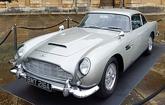

The Aston Martin DB5 is a British grand tourer (GT) produced by Aston Martin and designed by Italian coachbuilder Carrozzeria Touring Superleggera.[5] Originally produced from 1963 to 1965, the DB5 was an evolution of the final series of DB4. The "DB" designation is from the initials of David Brown who built up the company from 1947 onwards.
